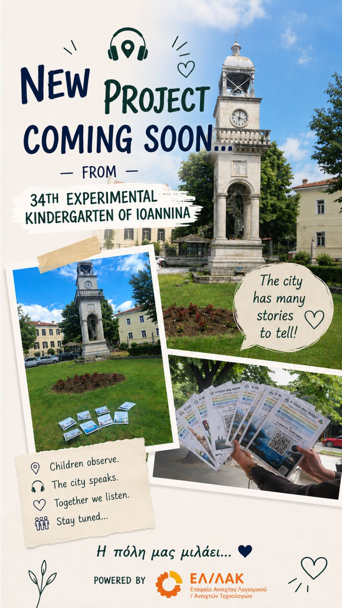
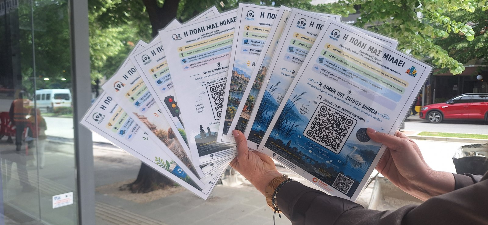
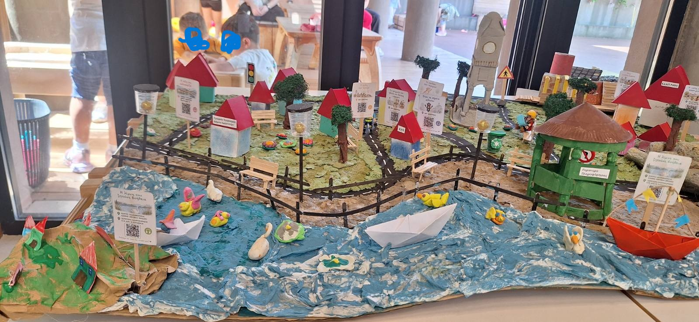
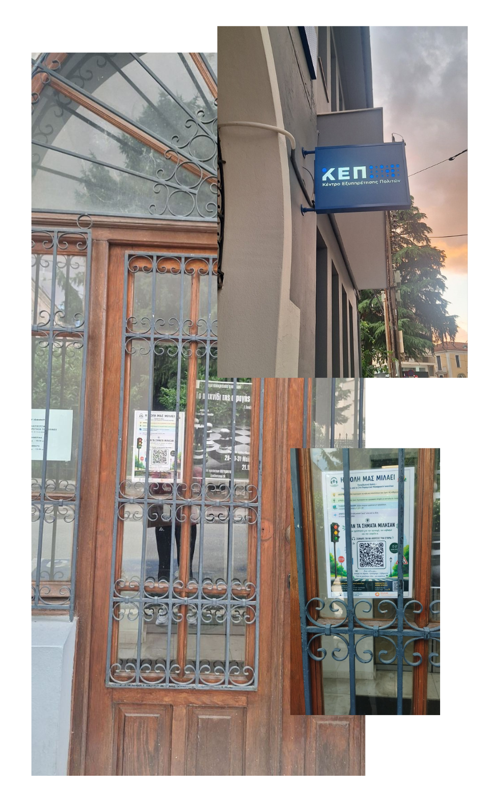
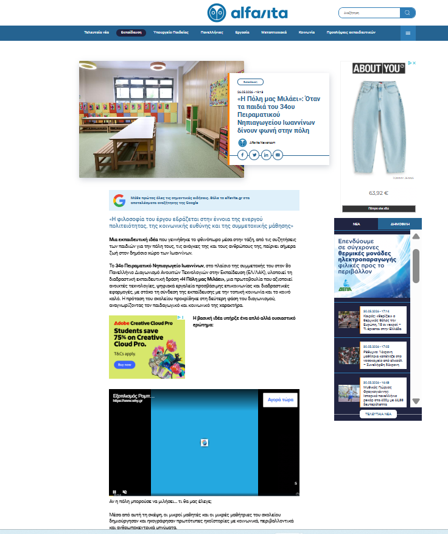
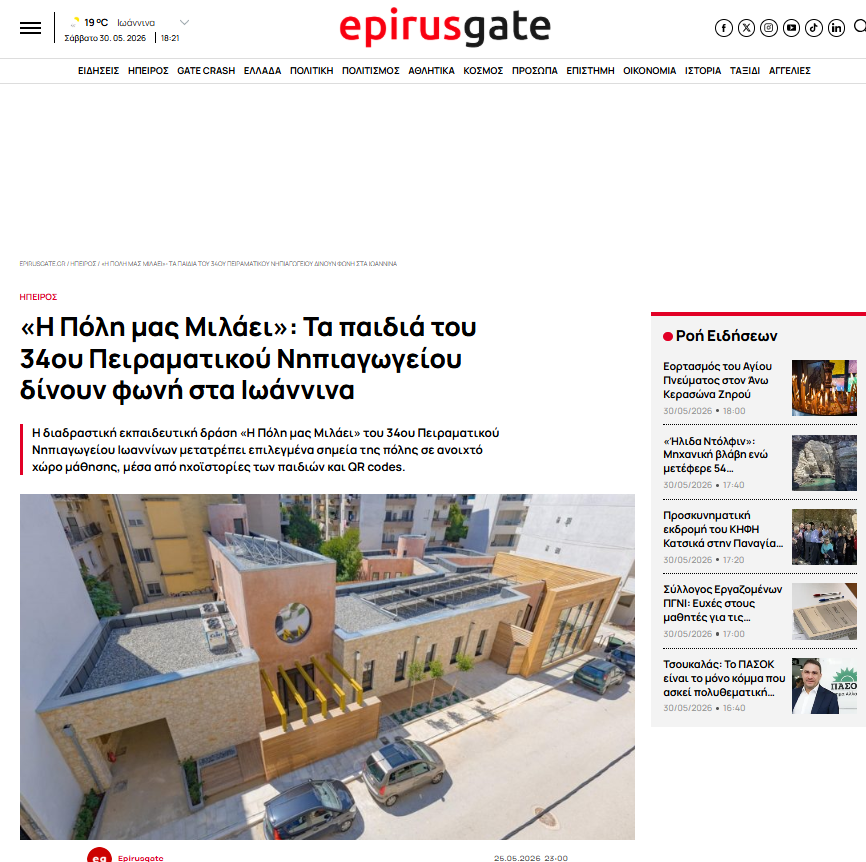
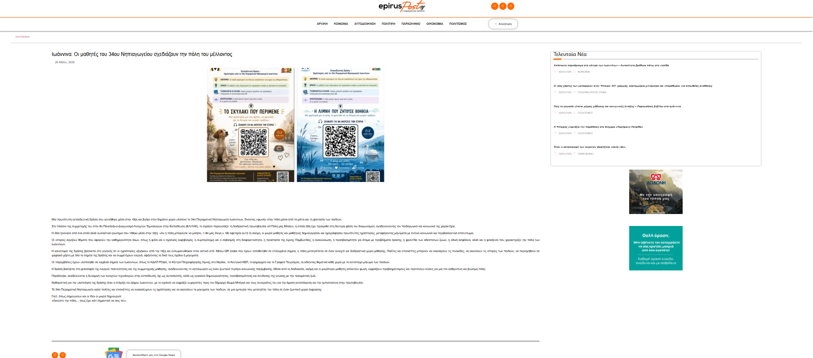
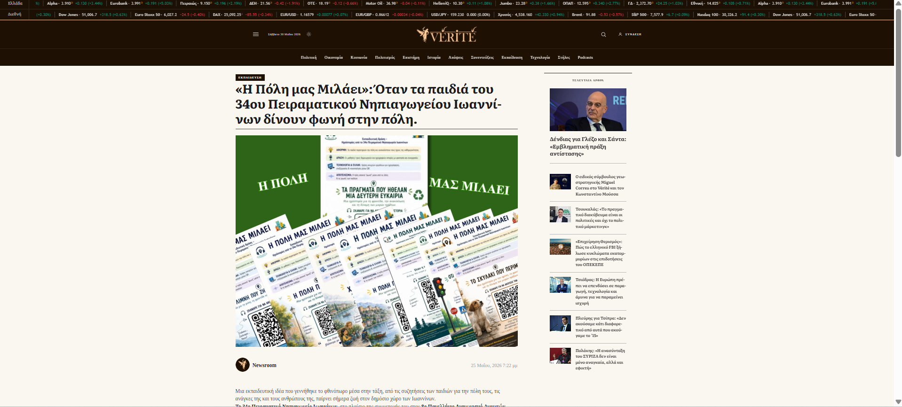

Φωτογραφίες Έργου






Το έργο «Η Πόλη μας Μιλάει» αποτελεί μια καινοτόμο δράση του 34ου Πειραματικού Νηπιαγωγείου Ιωαννίνων που συνδέει τη δημιουργική αφήγηση, την προσβασιμότητα, την ενεργό πολιτειότητα και τις ανοιχτές τεχνολογίες. Μέσα από ηχοϊστορίες και QR Codes, τα παιδιά μετατρέπουν την πόλη σε έναν ανοιχτό χώρο μάθησης και συμμετοχής.
Οι ιστορίες ακούγονται στα πραγματικά σημεία όπου ζει η κοινότητα.
Οι μαθητές παράγουν αυθεντικό περιεχόμενο για τους πολίτες.
GitHub, Audacity, Google Maps και ελεύθερα εργαλεία.
Ηχοϊστορίες
Σημεία στην πόλη
Ψηφιακή πλατφόρμα




Προώθηση της αποδοχής και της διαφορετικότητας.
Ευαισθητοποίηση για τη λίμνη και τον δημόσιο χώρο.
Τα παιδιά δημιουργούν περιεχόμενο για την κοινότητα.
QR Codes, χάρτες και ανοιχτές τεχνολογίες.




Η πόλη γίνεται χώρος αφήγησης, συμμετοχής και συμπερίληψης.
Επίσκεψη στην Ψηφιακή ΠλατφόρμαΈνα σύντομο βίντεο που παρουσιάζει τη διαδρομή του έργου από τη σύλληψη της ιδέας μέχρι την υλοποίηση στην πόλη.
Μικρές φωνές. Μικρές ιστορίες. Μια πόλη πιο ανοιχτή για όλους.